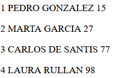

Ejercicio: Conectar asincronamente (AJAX) con el servidor (PHP), el servidor se conecta con una base de datos, hace una consulta sql y devuelve los resultados al usuario
La respuesta que deberiamos (si tuvieramos la base de datos y todo configurado) recibir es:
Aquí estará el contenido